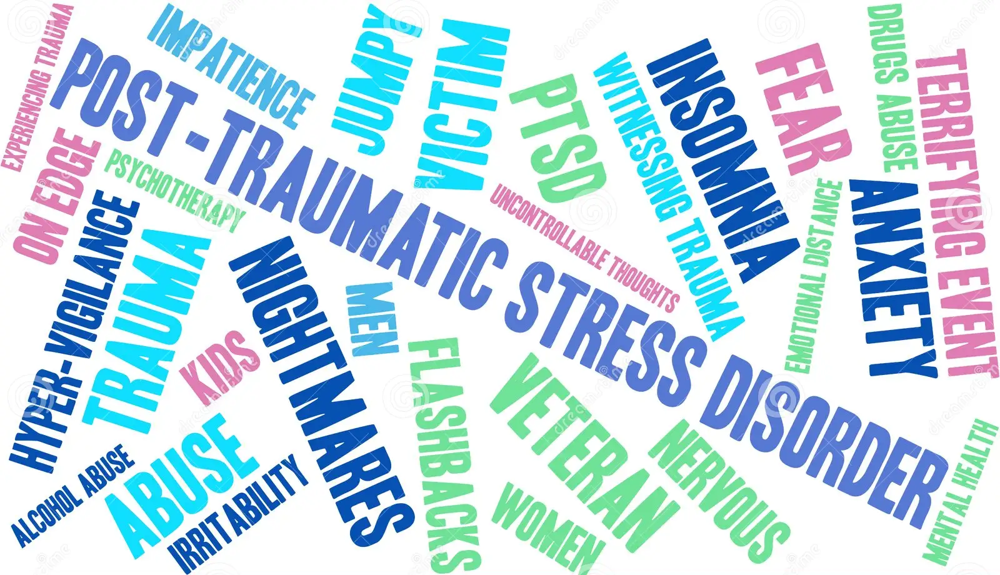

Overview Summary of Trauma- and Stressor-Related Disorders and Psychotic Disorders
Trauma- and Stressor-Related Disorders
Post-traumatic Stress Disorder (PTSD):
A psychiatric disorder resulting from past traumatic experiences that cause severe distress and disrupt everyday living.
Traumatic events such as natural disasters, accidents, war, rape, and sexual violence can lead to PTSD.
Individuals with PTSD may experience intense and disturbing thoughts and feelings related to the trauma, avoid triggering situations, and react strongly to ordinary stimuli.

Types of PTSD (Not Included in DSM-5):
Complex PTSD: Develops after prolonged, repeated trauma, such as long-term sexual or physical abuse.
Delayed Expression PTSD: PTSD that develops more than six months after the triggering event.
Dissociative PTSD: Characterized by dissociation, derealization, and depersonalization due to traumatic experiences.
Psychotic Disorders
General Characteristics:
Mental illnesses cause abnormal thoughts and perceptions, leading to a loss of touch with reality.
Common symptoms include delusions and hallucinations.
Types of Psychotic Disorders:
Schizophrenia: Hallucinations, delusions, unusual behavior, and withdrawal.
Schizoaffective Disorder: Combination of psychotic features (delusions) and mood symptoms like depression.
Schizophreniform Disorder: Schizophrenia episodes lasting more than one month but less than six months.
Delusional Disorder: Experiencing delusions without other schizophrenia symptoms.
Brief Psychotic Disorder: Short-term episode of psychosis lasting less than one month.
Substance-Induced Psychotic Disorder: Psychosis caused by drug effects.
Psychotic Disorder due to a Medical Condition: Psychosis as a symptom of medical conditions like Parkinson's or Alzheimer's disease, or as a side effect of certain medications.
These disorders significantly impact an individual's mental and emotional well-being, necessitating professional evaluation and treatment. Seeking help from mental health professionals is crucial for accurate diagnosis and appropriate interventions.
DSM-5-TR Indications
The DSM-5-TR indicates prominent features of trauma-related disorders include:
dysphoria (general dissatisfaction or unhappiness)
anhedonia (diminished ability to experience pleasure)
external anger and aggression
dissociation (depersonalization, derealization, amnesia, identity confusion, and identity alteration)
Common symptoms of Trauma- and Stressor-Related Disorders include:
Trauma symptoms are diverse across many mental health disorders. They’re not limited to a handful of experiences.